Busy Bee - תיקונים והשוואת מסכים
20.10.2026 | לייב בזמן הבדיקה מול localhost אחרי התיקון
תיאור משימה, דירוג, סטטיסטיקה וסגירת צ׳אט. תמונות אמיתיות מהדפדפן. לחיצה על תמונה פותחת צילום מלא.
צילומי ״לייב לפני״ נלקחו לפני דחיפת השינוי. הדוח מציג את המסכים שנבדקו, ואינו אישור שהגרסה המתוקנת נפרסה בלייב. תיעוד מלא, בדיקות ומגבלות.
1. תיאור המשימה
התיאור והערות המפרסם מופיעים לפני המפה. כשאין תיאור מפורט, מוצג התיאור הקצר המקורי.
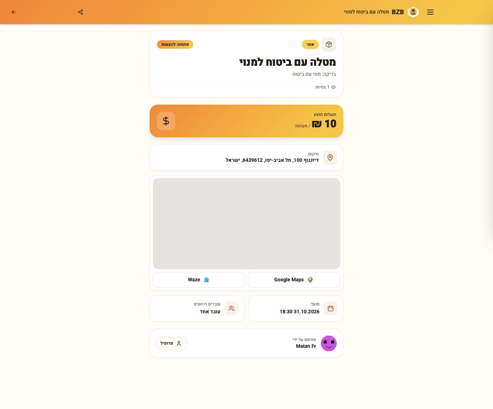
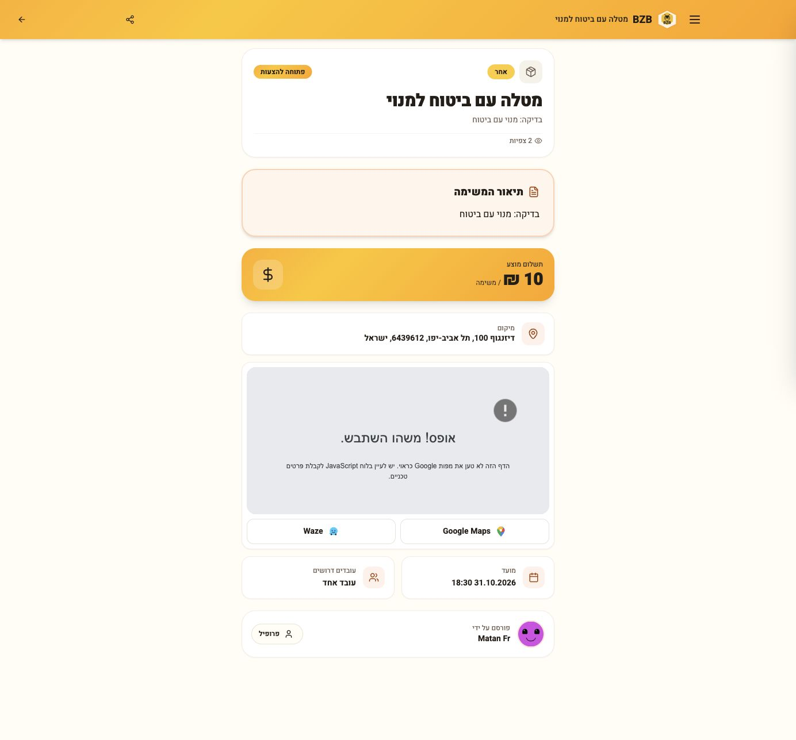
תיאור המשימה במובייל
אותה משימה, לפני ואחרי, ברוחב 390px.
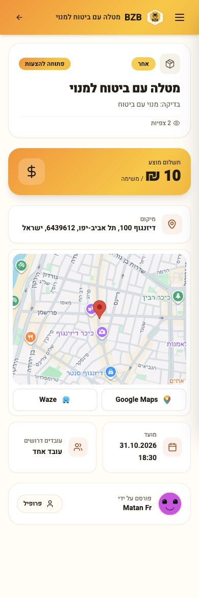
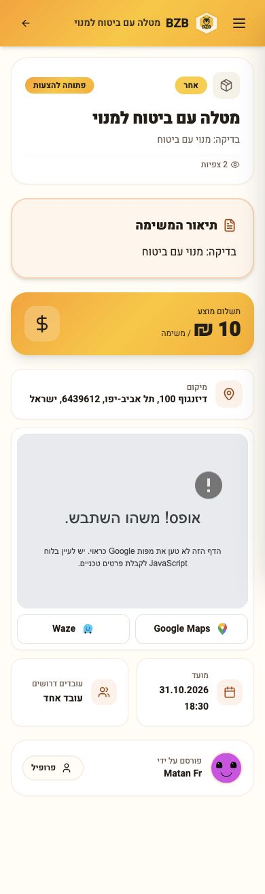
תיאור מפורט: השוואה ללייב
אותה משימת בניית גזיבו. הטקסט המקורי הועבר לראש המסך.
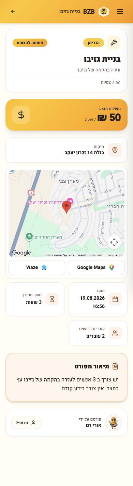
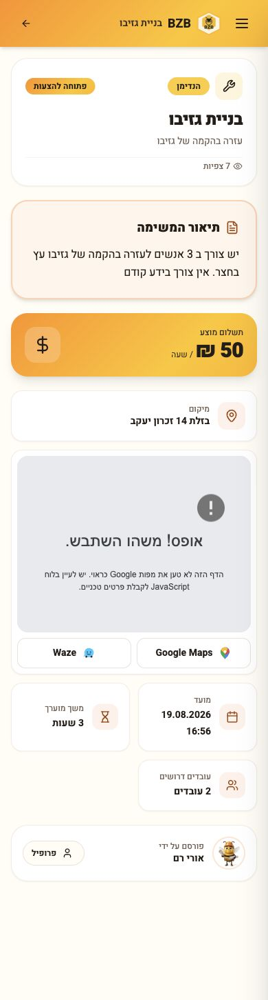
2. דירוג בפרופיל ציבורי
גם לפני הדירוג הראשון מוצג אזור דירוג. ביקורות מאושרות וממוצע נבדקו אוטומטית; לחשבון המצולם אין דירוגים.
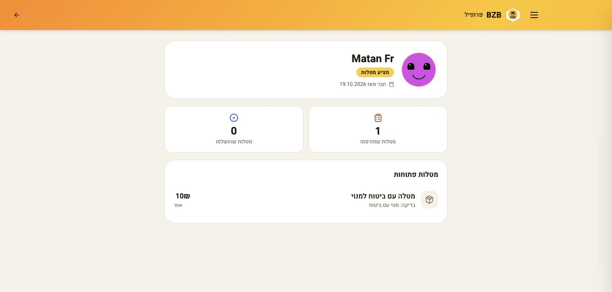
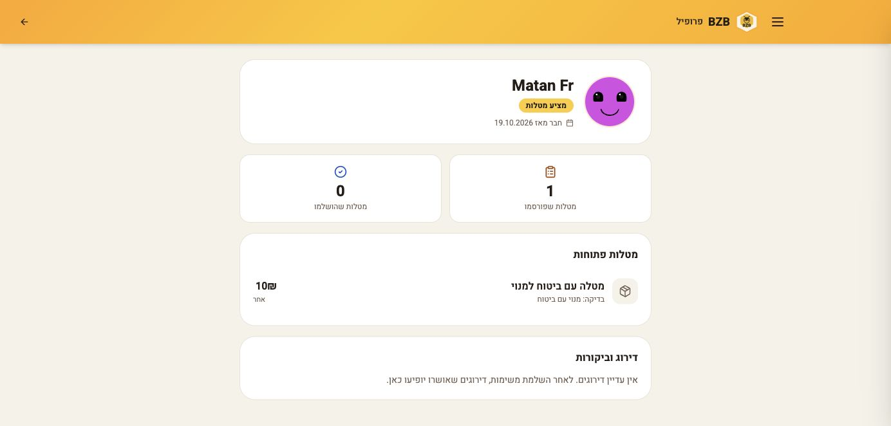
3. ספירות והכנסות בפרופיל
אותו חשבון בשני האתרים: 0 מטלות בלייב, 2 מטלות היסטוריות במקומי. מועמדות קודמת מוצגת גם אחרי החלפת תפקיד. אין בחשבון משימות שהתקבלו, ולכן ההכנסות נשארות 0. פרטי קשר נחתכו מהתמונות.
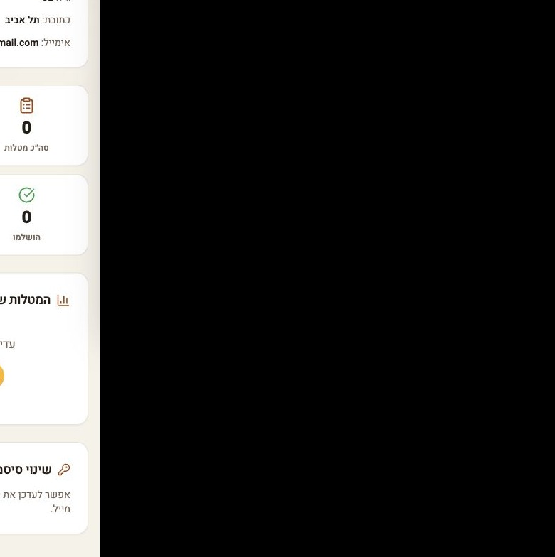
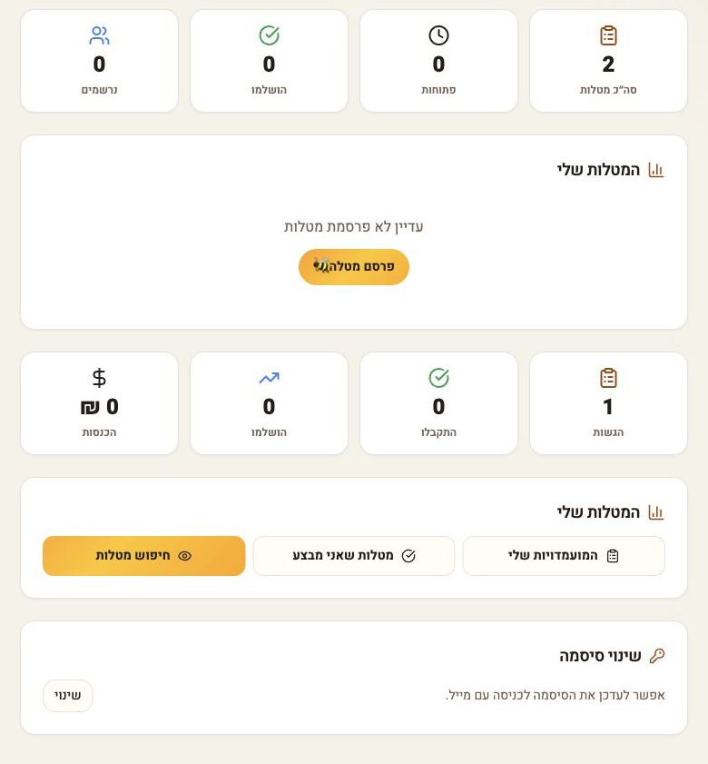
4. צ׳אט אחרי השלמת משימה
התיקון מסתיר שיחות שהסתיימו וסוגר את עורך ההודעות. בחשבון המצולם אין שיחות פעילות: התמונות מציגות מצב ריק בלבד. סגירה בזמן השלמה וקישור ישיר נבדקו בבדיקות רכיב עם נתוני בדיקה.
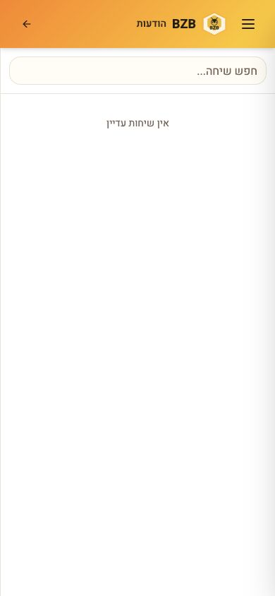
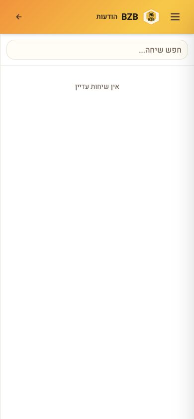
צילומי מובייל משלימים
רוחב CSS של 390px במסגרת דפדפן. נבדקה פריסה; לא מכשיר פיזי.


תוצאות הבדיקה
121 בדיקות עברו. TypeScript ובנייה עברו. 8 בדיקות הרשאות חיות דולגו לפי תנאי הסוויטה הקיימת.
Lint כללי נכשל ב-6 שגיאות קיימות. בדיקת הקבצים החדשים ויתר השינויים עברה; שגיאת הנגישות הקיימת ב-TaskDetail שוחזרה גם בגרסת הבסיס.
הכנסה שעתית מסומנת כמשוערת, משום שאין דיווח שעות בפועל. שיחות מוסתרות בממשק והיסטוריית ההודעות נשמרת. לא נוספה חסימת RLS.
לא בוצעו השלמת משימה, דירוג או תשלום אמיתיים בייצור. שגיאת Google Maps מקומית הופיעה ונשמרה בצילומים. צילומי הצ׳אט הריקים אינם ראיה לסגירה חיה.